Patch 3655 alpha
Welcome to the beta patchnotes for the 3655 beta.
We all had to wait very long, but the next patch, and the technical and organization structure to deliver it, is finally ready to be released into a public beta. The changes and all updates to them are now part of the FAF Beta featured mod, and will be released into the main game once they are tested sufficiently. To help making this happen as soon as possible, play as many games with FAF Beta as you can and post your feedback into the balance forum!
The initial focus of the patch was to address the controversial topic of first bombers and hoverbombing as mechanics that frustrated many players, especially new ones and some to a point where they stop playing, - but also mechanics that many people liked and that enriched the game with more options and possibilities.
As the patch got delayed during the server transitions and later because of other problems, we used the time to add more content and work on more changes to keep achieving progress, even when none of it made it into the game so far. That's why this patch is rather large and it is likely that the changes get implemented in smaller groups into the main game rather than all at once
During the creation of this patch, the metagame, and the desires of the active community about what balancechanges are needed, changed a lot.
When we started the patch, Aeon nerfs were the major topic, followed by a t2 rush trend and demands to nerf it. Then, since a few months,
Cybran replaced Aeon as the strongest faction in the minds of most active people. All this happened without any change,
which i believe is a good sign for a healthy balance that creates new strategies and changes old ones by itself.
This is by no means saying everything is perfect,
there is still a lot of work to do and many improvements possible, and some of them are subject of this patch.
But if opinions about what is too strong, and what is fine change by themself so often, it is important to be careful to avoid too extreme changes based on popular trends rather than actual necessity. Thats why some often desired
changes, e.g. a loyalist nerf, are not part of the changes. We thought a lot about this particular case, and there is no final decision made yet, so
it might still be added at a later point.
The main changes that are included in this beta are:
- Changes to bombers in regards of first bomber, hoverbombing (including Ahwassa) and normal bomber usage, together with AA changes
- Hitpoint nerfs for many economy buildings, factories and walls
- Improvements to the playability of the game by including the selen deselect mod, auto-toggle for Cybran AA, adjusting TML missile slots and continuing to adjust the speed of support units to main units, to avoid them running ahead or lagging behind.
- Some improvements to engineers and support factories
- many smaller changes
Special thanks to Keyser and JaggedAppliance for creating the balance test mod and joining the balance team with great contributions, Icedreamer and Exotic_Retard for assisting with coding and to the whole balance testing team for alpha testing all changes.
Thank you for your patience and we hope you have fun playing and testing the changes!
-- The balanceteam
Land
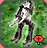Light Assault Bots:
A suggestion taking from the balance forum, while it would be desireable to give labs a more persisting role in the game, this is extremely hard to do.What we can do however, is to give them a very small buff to make it a bit less punishing to build them early.
- Build Time:
140→ 120
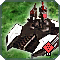Deceiver:
With all the demands for Cybran nerfs, we looked for areas where such are possible without removing what makes the faction so fun to play, and without accidently going too far. This idea was brought up in the balance forum by washy aswell.Increasing the cost of the mobile stealth field to be equal to the cost of mobile shields is one of several small nerfs to Cybran in this patch that look small individually, but should make a difference together.
- Energy Drain:
25→ 75
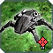Fire Beetle:
This is the second of such changes, and at the same time making it harder to abuse fire beetles by transporting them directly on top of ACUs, which was, and unfortunately keeps being (but at least to a lesser extend), a major problem.- now takes two spots in transports like other T2 units
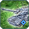Lobo:
Another idea from the balance forum by washy is actually reverting a very old change. The Lobo used to have 205 hitpoints a long time ago, but back then, UEF was very dominant thanks to this, so it was reduced to 200. Today, it is maybe time to bring UEF some of its lost power back.This is an attempt to buff UEF in a way that makes the faction more diverse and interesting instead of just adding more raw power to some units. In some situations this buff will be useless, but in others and with a smart UEF player who incorporates it into his strategy, the fact that opposing ACUs now need 3 shots instead of 2 to kill Lobos could be very powerful. This isnt trying to pretend this change is not very small, but it is a good example of how buffs should try to increase diversity in both - factions, and the game - while nerfs need to be done in a way that keeps this diversity.
- HP:
200→ 205
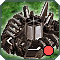Scathis:
The scathis has always been in an akward spot between comparatively cheap and mobile artillery and a powerful gameender, that is useless on bigger maps but devastating on smaller ones. While we are not solving this underlying issue, we can at least make it less devastating and remove the possibility for Cybran players to end teamgames much easier than other factions.- Mass cost:
85.000→ 110.000 - Energy cost:
1.500.000→ 2.000.000 - Build Time:
31500→ 50.000 - Range:
330→ 300
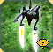 Selen:
We are implementing something similar to the ui mod "Selen Deselect" and give the selen a new toggleable button. The button will cloak and stealth the selen, like hold fire used to do, and lowers the selection priority so you won't accidently send it away with your army when its supposed to stay hidden in a key position.When toggled the selen will drain 5 energy to reduce the power (no pun intended) of the new selens, but it will likely (and is intended to) still be a buff to Seraphimphim as whole.
- Power consumption when toggled: 5
 Ythotha:
Ythotha:
There are some changes in work to buff the Ythotha, but they are hard to accomplish and not ready yet. But the unit is not forgotten!
- Changes yet to come
Mobile T1 Anti-Air
Mostly a convenience change, but with some balance impact: The stats of mobile t1 AA get doubled (with slight adjustments). Where you needed 2 units before, you need only 1 now, but it costs twice as much.The stats doubling is to reduce rolloff, make it cause less pathfinding issues in larger armies, require less apm to move your AA around and to generally improve that the unit felt rather weak and useless before. If you used it before, you'll probably know this feeling, and this change is improving it surprisingly much. The unit feels actually useful now and you can see it killing air units!
The biggest buff is however, that they won't die to a single bomb anymore. The speed change is adapted to tanks, so AA will not lag behind your army anymore and desperatly try to catch up. This resulted in a rather big speed increase for Seraphimphim and UEF, which is also very useful against early bombers and another indirect buff to this factions.
All mobile T1 Anti-Air:
- Mass cost:
28→ 55 - Energy cost:
140→ 275 - Build Time:
140→ 220
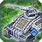 Archer:
- Health:
200→ 360 - Speed:
2.8→ 3.3 - Damage:
8→ 16
 Thistle:
Thistle:
- Health:
200→ 360 - Speed:
3→ 2.8 - Damage:
5→ 10
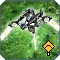 Ia-istle:
- Health:
200→ 360 - Speed:
2.5→ 3.4 - Damage:
4→ 8
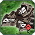 Sky Slammer:
- Health:
130→ 260 - Damage (AA weapon):
8→ 16
Hover tanks
In the last patch, we reduced hover speed on water to solve them beating ships, or holding them off too easy. With the experience since then, the nerf looks to have been a bit too much and we can finetune this numbers more now.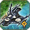 Yenzyne
- Speed on water:
3→ 3.5
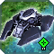 Blaze
- Speed on water:
3→ 3.5
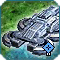 Riptide
- Speed on water:
3→ 3.3
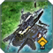 Hover flak (Seraphim and Aeon)
- Speed:
3→ 3.5
Engineers
The engy values from engymod were very careful designed to avoid a couple of potential issues. This issues didn't became true so far. As result we can make t2 and t3 engy efficiency as good as t1 engies. This means you dont need to invest more ressources if you want to assist with higher tech engies for the same buildpower anymore. They still have some downsides by needing a higher tier factory, having less speed, and less ability to finetune how much BP you get over time.It is worth observing if that leads to one of the biggest potential problems i tried to avoid when making engymod: too easy base defending with the ability to spam the required defence in no time. (Similar to the vanilla antinuke problem - you wouldn't need an antinuke, because you can still start one when you hear the nuke being launched and it'd finish in time with massive assist)
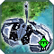 T2 Engineer
- Energy cost:
700→ 650 - Mass cost:
140→ 130 - Build time:
700→ 650 - Health: +100 HP
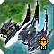 T3 Engineer
- Energy cost:
2200→ 1560 - Mass cost:
440→ 312 - Build time:
2200→ 1560 - Aeon & Seraphimphim Build Power:
40→ 30 - Health: +200 HP
Air
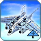T1 bombers
The t1 bomber has a couple of different issues we're trying to solve here:a) First bomber in combination with hoverbombing is not necessarily OP, but can be very frustrating for new players, and is OP on lower levels in a sense that you need to learn more (have more "skill") to counter it than you need to use it. The solution we are using after long discussions and tests is to remove hoverbombing and replace it with increased possibility to micro for experienced players. This will also solve the "logic" issue of hoverbombing that many people have, without removing possibilities of the game. Hoverbombing possibility is removed, but new micro possibility takes its place. However, it is harder to do, and has less impact, so much less people will be able to use it to their advantage
b) First bomber is extremely swingy, either giving the player who does it a huge advantage or sets him back a lot. The goal is to bring it closer to normal raiding units like labs. They will still be very swingy, due to the high investment for the airfactory and the bomber, their potential power need to be accordingly strong, but a combination of cost, higher buildtime, the anti air buffs and other things like radar removal, should make it easier, especially for inexperienced players, to deal with first bombers. Due to this and the hoverbombing changes there will probably (did anyone say hopefully?) be less first bombers, but the changes are trying to make them less frustrating without having to remove the option completly.
c) Unmicroed bombers were rather weak, often flying over enemy AA far away from targets, having low dps due to big circles and generally doing a lot of undesired things...microed bombers on the other hand could be extremly strong. The goal of this part of changes is to make microed bombers a bit worse (in this case more expensive) and unmicroed bombers better (they turn much faster and thus have higher dps, drop much more reliably and do less stupid things).
This set of changes needs to be tested with special focus, as it is rather big and complex it is hard to find a good balance between the different problems and solutions. The current bombers could be a bit too strong, and it might also make the ability to micro them pointless, as you wouldn't get much additional value out of it. Please remember that this is just the beta and not the final patch, and you can help finetuning this numbers if they are not good yet!
- Energy cost:
2250→ 2400 - Mass cost:
80→ 120 - Build Time:
500→ 800
- BreakOffDistance:
30→ 20 - Combat turn speed:
0.75→ 1.5 - K Turn:
0.7→ 0.8 - Start turn distance:
5→ 1.4 - Turn speed:
0.75→ 1.5 - Rate Of fire:
0.25→ 0.2 (reload 5 instead of 4 seconds) - RandomBreakOffDistanceMult:
1.5→ 1 - Radar has been removed
- FiringRandomness:
3→ 0
 Ahwassa
Ahwassa
The Ahwassa gets the same treatment regarding hoverbombing as the t1 bomber, without the other dimensions of the t1 bomber changes. This means removing hoverbombing and increasing normal microability in return. This is done especially to prevent hovering outside of SAM range, you can probably still drop a bomb outside of sam range (we tried many solutions to solve it for good, but so far none worked. We will keep searching in the future), but it should be much harder to do now to avoid taking fire.
But also the general dps increase that could be achieved by hovering is now harder to do, while the need to do it is reduced aswell, as unmicroed Ahwassas are turning faster and drop more reliable too.
- Start turn distance:
15→ 1 - Turn speed:
0.65→ 0.9
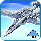 Ambassador
Another small UEF buff that is aimed increase diversity at the same time. While other factions need 3 t3 bombers to kill a t3 mex, UEF will need only 2. The idea is the opposite of Cybran that needs 2 bombs instead of 1 to kill a t2 mex.- Projectile Damage:
3000→ 3100
Navy
Structures
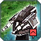Cybran T1 Anti-Air Turret:
This bug got introduced with the frigate AA changes, because both use the same projectile. Reverting the above changes also fixed this bug with the Cybran T1 AA tower.- is now able to shoot down airscouts flying from certain angles like other T1 static aa
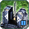 Tactical Missile Launchers:
This is mostly a convenience change to help new players not accidently wasting mass by building 20 missiles. But we took the opportunity to give Cybran another "faction diversity"..now the unit is called TML-4 for a reason..;)reduction of the clip size:
- Seraphimphim:
20→ 8 - Aeon:
16→ 6 - UEF:
12→ 6 - Cybran:
10→ 4
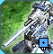 Tech 2 Stationary Artillery
This is a rather small change, as the unit stays very expensive, but its feeling a bit in the direction how its possible to make it a bit more useful without making it too strong (which could happen very quickly, as there is no unit that can counter it with more range unlike for other defence buildings)- Build time
1608→ 1200
 Aeon TMD
Aeon TMD
We are fixing Aeon TMD so its no longer possible to shoot missiles over it and hit targets behind the TMD. Thanks to Exotic_Retard for the code for this.
Economy buildings
The goal with all the HP reductions is to allow more options for agressive play, especially in the lategame. The goal is to bring the game closer to how it is working with the current low t2 pg HP and its impact on the game.The t2 pg nerf is needed because a change from last patch (that was implemented to solve a problem from a change the patch before..welcome to balancing :) made it based on luck if 2 corsairs would kill a t2 pg or not. 2 corsairs should now alwys kill a t2 pg.
As with UEF, that need only 2 strat bombs to kill a t3 mex, the HP for the t3 mex is finetuned against Cybran dreams, and they need a total of 4 bombs to destroy a t3 mex, just like they need one more bomb to kill t2 mex. (Aeon and Seraphim need 3).
we wanted to nerf the t2 mex HP more (something between 2000 and 2500), but unfortunately it would remove the Cybran disadvantage mentioned above. Suggestions how to get around this are welcome.
Walls found increasing popularity in the past year, and with that also causing increasing annoyance and proved that they are very powerfull. Walls take twice the time to build now (which is still very fast), and while UEF walls are almost as hard to destroy as before, Cybran walls are much less of a obstacle.
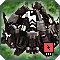 T3 pgen:
- Aeon and Seraphimphim HP:
9720→ 6100 - Cybran HP:
9720→ 6000 - UEF HP:
9720→ 9000 - Explosion Damage:
8000→ 5500
 T2 mexes:
T2 mexes:
- HP:
3000→ 2800
 T3 mexes:
T3 mexes:
- Aeon and Seraphimphim HP:
8400→ 6200 - Cybran HP:
8400→ 6000 - UEF HP:
8400→ 9000
 Walls:
Walls:
- BuildTime:
10→ 20 - Aeon and Seraphimphim HP:
4000→ 2000 - Cybran HP:
4000→ 1500 - UEF HP:
4000→ 3000
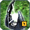T2 Power Generators:
- HP:
2160→ 1900
HQs
Aside from the deeply needed HQ HP nerfs, we took the opportunityto add yet another "faction diversity" for Cybran where they get just enough hp to die from few TML missiles..(T2 HQ and T3 support land & air die from 1 TML missile as they have only 6000 hp now) repairing engies could prevent this for the 12/18k hp factories, please test if the HP needs to be even lower for this cases or if its already too low. Especially low hp for navy t2 support factory is worth looking at because they have more BP than land, but die just as fast now.In the opposite direction, there is a buff for UEF with some of the factories, with this changes hp differences will become a relevant part of the game and the different factions, rather than being slightly different without any impact.
Navy factories get the same treatment t3 land and air got in engymod, BP and price increase to reduce the amount of engies required to have a normal "base production", even on maps with not very much mass you'd always see a lot of engies around the factories. Imagine it like a bigger amount of "in-built" engineers.
T2 land rush is nerfed for a slightly longer t1 phase, and indirectly a nerf to t3 rush too. (Remember how i wrote in the introduction that there was a period with big demand for t2 nerfs while this patch was made - this is a result from this) The values, especially BT look big, but old BT for a t2 factory was equivalent to 6 t1 tanks, now it's 8.5 which is still very little. Balancing the cost and time of the t2 upgrade is very tricky due to the mapsizes, if it should be still possible to rush t2 on small maps without it being too easy on normal sized ones the options of nerfs and buffs are very limited, and it'll alwys be a bit too easy on big maps, and a bit too hard on small maps to rush t2 (or to just tech in general).
If you can, look especially at the 6000 hp factories for Cybran in your games, it is a huge weakness added to the faction, and while its fashion to hate on cybran right now, this could be a bigger nerf than they deserve. Or the larger HP differences could be a cool new difference between the factions that also helps to even out the current differences in power between them without making them more equal, but by adding more unique strenghts and weaknesses.
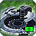 T1 Land Factories
- UEF HP:
4100→ 2600 - Aeon HP:
3700→ 2300 - Seraphimphim HP:
3700→ 2300 - Cybran HP:
3500→ 2000
T1 Air Factories
- UEF HP:
4100→ 2600 - Aeon HP:
3700→ 2300 - Seraphimphim HP:
3700→ 2300 - Cybran HP:
3500→ 2000
T1 Navy Factories
- UEF HP:
4800→ 4000 - Aeon HP:
4400→ 3500 - Seraphimphim HP:
4600→ 3500 - Cybran HP:
4200→ 3000
 T2 Land HQs
T2 Land HQs
- UEF HP:
9000→ 7000 - Aeon HP:
8200→ 6500 - Seraphimphim HP:
8200→ 6500 - Cybran HP:
7800→ 6000 - Mass Cost:
800→ 1280 - Energy Cost:
7200→ 11200 - Build Time:
1600→ 2600
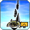 T2 Air HQs
- Same HP as Land HQs
 T2 Navy HQs
T2 Navy HQs
- UEF HP:
18000→ 11000 - Aeon HP:
16000→ 10000 - Seraphimphim HP:
17000→ 10000 - Cybran HP:
15000→ 9000 - Mass Cost:
1370→ 1700 - Energy Cost:
6600→ 8500 - Build Time:
2400→ 3600 - Build Power:
60→ 90
 T3 Land HQs
T3 Land HQs
- UEF HP:
22000→ 14000 - Aeon HP:
20000→ 13000 - Seraphimphim HP:
21000→ 13000 - Cybran HP:
19000→ 12000
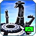 T3 Air HQs
- Same HP as Land HQs
 T3 Navy HQs
T3 Navy HQs
- UEF HP:
40000→ 20000 - Aeon HP:
37500→ 19000 - Seraphimphim HP:
38000→ 19000 - Cybran HP:
34000→ 18000 - Mass Cost:
5450→ 7500 - Energy Cost:
24472→ 35000 - Build Time:
9200→ 11250 - Build Power:
120→ 150
Support Factories
On top of the already explained HP nerfs, we want land tech transition to be a little bit more risky and gradually rather than the current instant switch from t1->t2->t3. For this, we increase the cost and time for support factories slightly. This changes won't automatically achieve this, but it will be a step into this direction. T2 Land Support Factories
- Mass Cost:
300→ 340 - Build Time:
1300→ 1600
 T2 Navy Support Factories
T2 Navy Support Factories
- UEF HP:
9000→ 6500 - Aeon HP:
8000→ 5500 - Seraphimphim HP:
8500→ 5500 - Cybran HP:
7500→ 4500 - Mass Cost:
500→ 800 - Energy Cost:
2500→ 4000 - Build Time:
2000→ 3000 - Build Power:
60→ 90
T3 Land Support Factories
- Same HP as T2 Land HQs
- Mass Cost:
750→ 860 - Build Time:
3000→ 4000
T3 Land Air Support Factories
- Same HP as T2 Air HQs
 T3 Navy Support Factories
T3 Navy Support Factories
- Same HP as T2 Naval HQs
- Mass Cost:
800→ 1100 - Energy Cost:
3429→ 5500 - Build Time:
4000→ 3500 - Build Power:
120→ 150
ACUs
 All ACUs
All ACUs
The regen on t2 and t3 made nano, regen field and shield upgrades often redundant and made t2 too strong in combination with gun and in teamgames (or both). The T3 BP reduction is a small nerf to t3 comdrops.
The hp gets reduced from t2 to prevent it making it significantly harder to snipe or attack ACUs, and together with the removal of regen, it can make it more possible ot attack a low health ACU again after a failed attack. In general, this change should promote more agressive play in teamgames and reduce the drawn out ACU-Standoffs a little.
Nerfs to RAS have been discussed for a long time, as the powerful RAS had a couple of negative effects like a much faster jump to t3 air, especially in teamgames. The exact numbers, and if the nerf is best done by reducing income, or increasing cost, might change, but everyone who wished for a RAS nerf since a long time will hopefully be happy with this patch.
- The T2 and T3 upgrade don't increase ACU health regeneration anymore.
- T2 extra Health :
3000 (3500 for Cybran)→ 1500 - T3 ACU build power :
126→ 100
RAS & ARAS
- Ras BuildTime:
1400→ 2800 - Aeon income:
18 mass→ 14 mass,2700 energy→ 2000 energy - Seraphimphim income:
16 mass→ 12 mass,3000 energy→ 2200 energy - UEF income:
14 mass→ 10 mass,3300 energy→ 2500 energy - Cybran income:
12 mass→ 8 mass,3500 energy→ 2800 energy
 Aeon ACU
Aeon ACU
We buffed the sensor upgrade before already, but it is still not a considerable alternative to gun. We will keep buffing it until it gets used. :)As side change, sensor, cybran stealth and potentially nano in a change that'll be added later, have the same cost now.
Enhanced Sensor System:
- Energy cost:
10000→ 5000 - Mass cost:
400→ 350 - Build time:
500→ 500 - Omni Range
100→ 80 - Vision Range
50→ 80
Cybran ACU
A nerf that also adds more consistency to cybran regen. The base regen is (back) to 15, and every veterancy gives now +4 (while other factions get +3, but more absolute HP due to higher base HP). Especially in earlier stages, the cybran ACU is now as weak as it used to be if you can't make smart use of the extra regen.- Regen:
17→ 15 - Regen per veterancy:
21/24/27/30/33→ 19/23/27/31/35
Personal Stealth System:
- Energy cost:
5250→ 5000 - Mass cost: 350
- Build time:
350→ 500
Auto-Toggle
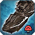Siren:
This feature removes the toggle on Cybran mobile t1 AA, t3 AA and the cruiser and replaces it with a system that switches targets automatically (with priority on air). The cruiser gets some nerfs to prevent it from becoming too strong, other AA should be fine but if you find it to be too weak or too strong, please let us know! Special thanks to exotic retard and the Equilibrium mod for helping with the code for this.- AA: Damage per projectile:
60→ 80 - Firing Randomness:
0.3→ 0.9 - Fire Cycle:
0.5→ 0.25